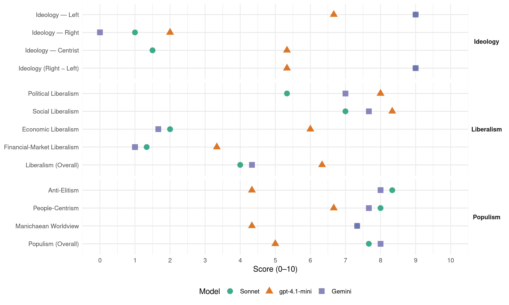

PCF (France, 1973)
manifesto_id 31220_197303
Get full text: This site shows derived annotations and short verbatim quotes only. The full manifesto text is © Manifesto Project / WZB — obtain it via manifesto-project.wzb.eu using the manifesto_id above.
Headline scores
| Dimension | Sonnet | gpt-4.1-mini | Gemini |
|---|---|---|---|
| Populism (Overall) | 7.7 | 5.0 | 8.0 |
| Anti-Elitism | 8.3 | 4.3 | 8.0 |
| People-Centrism | 8.0 | 6.7 | 7.7 |
| Manichaean Worldview | 7.3 | 4.3 | 7.3 |
| Ideology (Right − Left) | 9.0 | 5.3 | 9.0 |
| Liberalism (Overall) | 4.0 | 6.3 | 4.3 |
| Political Liberalism | 5.3 | 8.0 | 7.0 |
| Social Liberalism | 7.0 | 8.3 | 7.7 |
| Economic Liberalism | 2.0 | 6.0 | 1.7 |
| Financial-Market Liberalism | 1.3 | 3.3 | 1.0 |
Evidence per dimension
Economic Liberalism
Gemini · score 1.0 · verified · chunk 1
“Le contrôle des prix et le blocage de certains d’entre eux”
pensions, retraites et allocations familiales. Le contrôle des prix et le blocage de certains d’entre eux sera d’ailleurs un moyen central
Gemini · score 2.0 · verified · chunk 2
“soustraire progressivement les forces productives au grand capital”
démocratie réelle, à notre époque, exige bien davantage de soustraire progressivement les forces productives au grand capital privé et par conséquent
Gemini · score 2.0 · verified · chunk 3
“réglementation visera à la stabilité des prix”
Pour atteindre ces différents buts, une série de mesures seront prises. Une réglementation visera à la stabilité des prix, à l’égalisation
gpt-4.1-mini · score 7.0 · verified · chunk 1
“Le secteur du logement sera déclaré prioritaire. L’objectif de 700 000 logements construits chaque année”
Le secteur du logement sera déclaré prioritaire. L’objectif de 700 000 logements construits chaque année devra être atteint le plus rapidement possible. Sur ce total, la part des H. L. M. sera de 400 000 logements.
gpt-4.1-mini · score 7.0 · verified · chunk 2
“La politique économique nouvelle reposera sur les principales dispositions suivantes intervention des travailleurs”
Créer les conditions du progrès social pour permettre à chacun de vivre mieux dans une société de plus en plus développée nécessite une orientation entièrement nouvelle de la politique économique, une transformation profonde des structures de notre économie. … Le programme du gouvernement démocratique reposera en conséquence sur les principales dispositions suivantes intervention des travailleurs et de leurs organisations dans la gestion, à tous les niveaux, des entreprises, des administrations, des collectivités locales et de l’État ; - nationalisation démocratique des groupes monopolistes industriels et bancaires qui dominent les secteurs-clés de l’économie ; remplacement de la concurrence par la compétition et la coopération entre les grandes entreprises nationalisées dans le cadre des moyens et des objectifs du plan démocratique; équilibre des ressources et des dépenses de la balance des paiements dans la stabilité des prix et de la monnaie.
gpt-4.1-mini · score 4.0 · verified · chunk 3
“la modernisation de l’ensemble du réseau commercial et de services”
Aussi, en liaison avec la politique nouvelle et générale d’aménagement du territoire, la modernisation de l’ensemble du réseau commercial et de services, indispensable à la satisfaction des besoins de la population et composé, en majorité, de petites et moyennes surfaces de vente et de petites entreprises de service, sera engagée.
Sonnet · score 2.0 · verified · chunk 1
“planification démocratique”
L’équilibre de l’emploi sera progressivement réalisé dans le cadre de la planification démocratique, grâce à l’extension du secteur nationalisé.
Sonnet · score 2.0 · verified · chunk 2
“remplacement de la concurrence par la compétition”
remplacement de la concurrence par la compétition et la coopération entre les grandes entreprises nationalisées dans le cadre des moyens et des objectifs du plan démocratique
Sonnet · score 2.0 · verified · chunk 3
“nationalisation des principaux groupes monopolistes préservera les petites et moyennes entreprises”
La nationalisation des principaux groupes monopolistes préservera les petites et moyennes entreprises privées de la disparition ou de la subordination aux monopoles.
Financial-Market Liberalism
Gemini · score 1.0 · verified · chunk 1
“par la nationalisation progressive des grandes sociétés monopolistes - industrielles et bancaires”
d’importants secteurs de la vie culturelle seront, par la nationalisation progressive des grandes sociétés monopolistes - industrielles et bancaires -, dégagés de l’emprise
Gemini · score 1.0 · verified · chunk 2
“La nationalisation du système financier sera l’une”
La nationalisation du système financier sera l’une des premières à réaliser : les modalités en sont précisées
Gemini · score 1.0 · verified · chunk 3
“nationaliser l’ensemble du système bancaire”
administrative des banques restées privées ne saurait remplacer ou différer leur nationalisation. Il faut nationaliser l’ensemble du système bancaire et financier.
gpt-4.1-mini · score 2.0 · verified · chunk 1
“Le patronat sera écarté de la gestion des caisses de Sécurité sociale des salariés”
Le patronat sera écarté de la gestion des caisses de Sécurité sociale des salariés. Les représentants des salariés seront élus au suffrage universel avec représentation proportionnelle.
gpt-4.1-mini · score 6.0 · verified · chunk 2
“La nationalisation du système financier sera l’une des premières à réaliser”
La nationalisation du système financier sera l’une des premières à réaliser : les modalités en sont précisées au chapitre ” Le financement démocratique de l’expansion économique et sociale “. Elle est indispensable pour maîtriser les mouvements de capitaux, pour réorienter l’emploi des fonds selon les objectifs démocratiques. Sans elle, le capital privé pourrait centraliser des masses de capitaux qui, en agissant sur l’appareil de production et sur la monnaie, empêcheraient le fonctionnement normal du secteur nationalisé.
gpt-4.1-mini · score 2.0 · verified · chunk 3
“contrôle renforcé des changes et des relations financières extérieures”
Le gouvernement démocratique prendra donc dans ce domaine des mesures immédiates : contrôle renforcé des changes et des relations financières extérieures et, au besoin, contrôle aux frontières (sans tracasseries pour les travailleurs frontaliers, les immigrés, les touristes); réglementation des mouvements de fonds (achats d’actions et d’obligations étrangères) et des opérations de change liées aux relations commerciales extérieures, etc.
Sonnet · score 2.0 · verified · chunk 1
“nationalisation des grandes entreprises”
La reconnaissance du métier de travailleur scientifique; la nationalisation des grandes entreprises, qui favorisera les passages entre l’enseignement, la recherche et la production.
Sonnet · score 1.0 · verified · chunk 2
“nationalisation du système financier sera l’une des premières”
La nationalisation du système financier sera l’une des premières à réaliser… Elle est indispensable pour maîtriser les mouvements de capitaux, pour réorienter l’emploi des fonds selon les objectifs démocratiques.
Sonnet · score 1.0 · verified · chunk 3
“nationaliser l’ensemble du système bancaire et financier”
L’expérience de 1945 montre qu’une nationalisation partielle des institutions financières du crédit est finalement détournée de son but par le secteur privé subsistant […] Il faut nationaliser l’ensemble du système bancaire et financier.
Political Liberalism
Gemini · score 7.0 · verified · chunk 1
“un élargissement de la démocratie dans tous les domaines”
Cette amélioration des conditions de vie ira de pair avec ’un élargissement de la démocratie dans tous les domaines et à tous les niveaux.
Gemini · score 8.0 · verified · chunk 2
“garantie des libertés individuelles et collectives”
La force publique instituée pour la garantie des libertés individuelles et collectives devra rester en permanence au service du peuple
Gemini · score 6.0 · verified · chunk 3
“assemblées élues au suffrage universel”
Principes et règles démocratiques de la politique fiscale. La mise en place et l’application de cette politique fiscale s’effectueront selon les principes et les règles démocratiques. Seules les assemblées élues au suffrage universel ont le droit
gpt-4.1-mini · score 8.0 · verified · chunk 1
“La vie politique, économique et sociale sera ainsi orientée dans un sens profondément nouveau”
La vie politique, économique et sociale sera ainsi orientée dans un sens profondément nouveau. L’élargissement de la démocratie dans tous les domaines et à tous les niveaux.
gpt-4.1-mini · score 9.0 · verified · chunk 2
“La liberté d’expression, l’inviolabilité du domicile, le secret de la correspondance”
La peine de mort sera abolie. La liberté d’expression, l’inviolabilité du domicile, le secret de la correspondance et des conversations, la protection de la vie privée seront assurés. Le respect du principe de la présomption d’innocence sera assuré. Toute rigueur qui ne serait pas nécessaire pour s’assurer d’un prévenu engagera la responsabilité personnelle de ses auteurs.
gpt-4.1-mini · score 7.0 · verified · chunk 3
“Seules les assemblées élues au suffrage universel ont le droit de lever les impôts”
Principes et règles démocratiques de la politique fiscale. La mise en place et l’application de cette politique fiscale s’effectueront selon les principes et les règles démocratiques. Seules les assemblées élues au suffrage universel ont le droit de lever les impôts. Les réformes du système fiscal sont de la compétence du Parlement.
Sonnet · score 6.0 · verified · chunk 1
“élargissement de la démocratie dans tous les domaines”
Cette amélioration des conditions de vie ira de pair avec un élargissement de la démocratie dans tous les domaines et à tous les niveaux.
Sonnet · score 6.0 · verified · chunk 2
“L’indépendance de la justice à l’égard du pouvoir”
L’indépendance de la justice à l’égard du pouvoir doit être rétablie. Le Conseil supérieur de la magistrature sera démocratisé.
Sonnet · score 4.0 · verified · chunk 3
“Seules les assemblées élues au suffrage universel ont le droit de lever les impôts”
La mise en place et l’application de cette politique fiscale s’effectueront selon les principes et les règles démocratiques. Seules les assemblées élues au suffrage universel ont le droit de lever les impôts. Les réformes du système fiscal sont de la compétence du Parlement.
Liberalism (Overall)
Gemini · score 4.0 · verified · chunk 1
“un élargissement de la démocratie dans tous les domaines”
Cette amélioration des conditions de vie ira de pair avec ’un élargissement de la démocratie dans tous les domaines et à tous les niveaux.
Gemini · score 5.0 · verified · chunk 2
“garantie des libertés individuelles et collectives”
La force publique instituée pour la garantie des libertés individuelles et collectives devra rester en permanence au service du peuple
Gemini · score 4.0 · verified · chunk 3
“nationaliser l’ensemble du système bancaire”
administrative des banques restées privées ne saurait remplacer ou différer leur nationalisation. Il faut nationaliser l’ensemble du système bancaire et financier.
gpt-4.1-mini · score 6.0 · verified · chunk 1
“La vie politique, économique et sociale sera ainsi orientée dans un sens profondément nouveau”
La vie politique, économique et sociale sera ainsi orientée dans un sens profondément nouveau. L’élargissement de la démocratie dans tous les domaines et à tous les niveaux.
gpt-4.1-mini · score 8.0 · verified · chunk 2
“La liberté d’expression, l’inviolabilité du domicile, le secret de la correspondance”
La peine de mort sera abolie. La liberté d’expression, l’inviolabilité du domicile, le secret de la correspondance et des conversations, la protection de la vie privée seront assurés. Le respect du principe de la présomption d’innocence sera assuré. Toute rigueur qui ne serait pas nécessaire pour s’assurer d’un prévenu engagera la responsabilité personnelle de ses auteurs.
gpt-4.1-mini · score 5.0 · verified · chunk 3
“Seules les assemblées élues au suffrage universel ont le droit de lever les impôts”
Principes et règles démocratiques de la politique fiscale. La mise en place et l’application de cette politique fiscale s’effectueront selon les principes et les règles démocratiques. Seules les assemblées élues au suffrage universel ont le droit de lever les impôts. Les réformes du système fiscal sont de la compétence du Parlement.
Sonnet · score 5.0 · verified · chunk 1
“Toute forme de pré-censure et de censure sera abolie”
Pas d’épanouissement de la création sans liberté de la création. Pas d’essor de la pensée sans liberté de la pensée. Toute forme de pré-censure et de censure sera abolie.
Sonnet · score 4.0 · mixed · chunk 2
“élargissement des libertés et la participation effective”
l’élargissement des libertés et la participation effective des travailleurs à la direction et à l’orientation de la vie de la nation seront inséparables.
Sonnet · score 3.0 · verified · chunk 3
“contrôle renforcé des changes et des relations financières extérieures”
Le gouvernement démocratique prendra donc dans ce domaine des mesures immédiates : contrôle renforcé des changes et des relations financières extérieures et, au besoin, contrôle aux frontières
Anti-Elitism
Gemini · score 8.0 · verified · chunk 1
“Le parti de la haute finance et de la grande industrie a fait main basse sur l’État”
La jeunesse est laissée pour compte. Le parti de la haute finance et de la grande industrie a fait main basse sur l’État. Il faut changer de cap.
Gemini · score 8.0 · verified · chunk 2
“politique antisociale du grand capital”
destiné à faire avaliser par les travailleurs la politique antisociale du grand capital. En fait, les travailleurs sont tenus à l’écart
Gemini · score 8.0 · verified · chunk 3
“La concentration monopoliste menace l’avenir”
CHAPITRE III LES PETITES ET MOYENNES ENTREPRISES La concentration monopoliste menace l’avenir des petites et moyennes entreprises
gpt-4.1-mini · score 2.0 · verified · chunk 1
“la politique du grand capital plonge la France dans ’me crise”
La politique du grand capital plonge la France dans ’me crise qui affecte tous les aspects de la vie nationale. Les richesses du pays sont mutilées, altérées et détournées au profit de quelques grandes sociétés privées.
gpt-4.1-mini · score 8.0 · verified · chunk 2
“le régime en place depuis douze ans a progressivement vidé la démocratie politique de tout contenu”
Dans le régime actuel, la participation n’est qu’un leurre, tout juste destiné à faire avaliser par les travailleurs la politique antisociale du grand capital. En fait, les travailleurs sont tenus à l’écart de la gestion des entreprises; la population ne peut participer aux grands choix politiques qui décident du sort de la nation. Le régime en place depuis douze ans a progressivement vidé la démocratie politique de tout contenu. Il n’hésite pas à utiliser la violence et les désordres qu’il suscite pour renforcer ses moyens de répression et s’attaquer aux, libertés individuelles, aux droits et traditions démocratiques de notre peuple.
gpt-4.1-mini · score 3.0 · verified · chunk 3
“La concentration monopoliste menace l’avenir des petites et moyennes entreprises”
CHAPITRE III LES PETITES ET MOYENNES ENTREPRISES La concentration monopoliste menace l’avenir des petites et moyennes entreprises, industrielles, artisanales et commerciales. La nationalisation des principaux groupes monopolistes préservera les petites et moyennes entreprises privées de la disparition ou de la subordination aux monopoles.
Sonnet · score 8.0 · verified · chunk 1
“Le parti de la haute finance et de la grande industrie”
Les travailleurs sont tenus à l’écart des décisions politiques et économiques nationales. Le parti de la haute finance et de la grande industrie a fait main basse sur l’État.
Sonnet · score 8.0 · verified · chunk 2
“capitalisme monopoliste d’État porte la responsabilité directe”
Le capitalisme monopoliste d’État porte la responsabilité directe de la crise que nous vivons. Un petit nombre de gros capitalistes, qui prétendent identifier leurs intérêts propres à celui du pays
Sonnet · score 9.0 · verified · chunk 3
“L’oligarchie financière domine, en fin de compte, toute l’économie française”
Les cinq ou six grands groupes financiers composent avec les groupes géants étrangers, sans considération de l’intérêt national. […] L’oligarchie financière domine, en fin de compte, toute l’économie française.
Ideology — Centrist
gpt-4.1-mini · score 5.0 · verified · chunk 1
“L’intervention des masses populaires sera, en effet, nécessaire”
L’intervention des masses populaires sera, en effet, nécessaire pour que les mesures proposées ici deviennent réalité. Celles-ci seront progressivement suivies d’autres.
gpt-4.1-mini · score 7.0 · verified · chunk 2
“La participation de plus en plus étendue et active des citoyens à la définition des objectifs nationaux”
La participation de plus en plus étendue et active des citoyens à la définition des objectifs nationaux, au choix des moyens, au contrôle de la réalisation, est une condition majeure d’une véritable démocratie en même temps que du développement économique et social.
gpt-4.1-mini · score 4.0 · verified · chunk 3
“le régime nouveau de démocratie économique et politique favorisera la coopération”
En conséquence, le régime nouveau de démocratie économique et politique favorisera la coopération entre les petites et moyennes entreprises, les collectivités locales et le secteur nationalisé.
Sonnet · score 1.0 · verified · chunk 2
“programme approuvé par la majorité du peuple”
le gouvernement démocratique appliquera le programme approuvé par la majorité du peuple, bénéficiera du soutien actif des masses populaires
Sonnet · score 2.0 · verified · chunk 3
“gouvernement démocratique d’union populaire”
Il faut à la France un gouvernement démocratique d’union populaire!
Ideology — Left
Gemini · score 9.0 · verified · chunk 1
“nationalisation des secteurs-clés de l’économie”
au niveau national et à l’échelon régional. Cette politique sera rendue possible par la nationalisation des secteurs-clés de l’économie et la contractualisation
Gemini · score 9.0 · verified · chunk 2
“nationalisation démocratique des groupes monopolistes”
les principales dispositions suivantes intervention des travailleurs et de leurs organisations dans la gestion, à tous les niveaux, des entreprises, des administrations, des collectivités locales et de l’État ; - nationalisation démocratique des groupes monopolistes industriels et bancaires
Gemini · score 9.0 · verified · chunk 3
“nationalisation des principaux groupes monopolistes”
des petites et moyennes entreprises, industrielles, artisanales et commerciales. La nationalisation des principaux groupes monopolistes préservera les petites
gpt-4.1-mini · score 8.0 · verified · chunk 1
“la politique du grand capital plonge la France dans ’me crise”
La politique du grand capital plonge la France dans ’me crise qui affecte tous les aspects de la vie nationale. Les richesses du pays sont mutilées, altérées et détournées au profit de quelques grandes sociétés privées.
gpt-4.1-mini · score 9.0 · verified · chunk 2
“le capitalisme monopoliste d’État porte la responsabilité directe de la crise que nous vivons”
Il existe un contraste flagrant entre, d’un côté, les énormes possibilités que recèlent les progrès scientifiques et techniques, les moyens de production actuels, le niveau de culture et de responsabilité qu’elles appellent ; de l’autre, l’aggravation des conditions de travail et l’insatisfaction croissante des besoins. Alors que le régime actuel se targue de gains de productivité, les travailleurs connaissent l’insécurité d’emploi et l’intensité croissante du travail. Alors qu’il se prétend le plus ” efficace “, on observe l’hypertrophie de certaines concentrations industrielles et urbaines et le dépérissement des autres. … Le capitalisme monopoliste d’État porte la responsabilité directe de la crise que nous vivons.
gpt-4.1-mini · score 3.0 · verified · chunk 3
“La nationalisation des principaux groupes monopolistes préservera les petites et moyennes entreprises privées”
La concentration monopoliste menace l’avenir des petites et moyennes entreprises, industrielles, artisanales et commerciales. La nationalisation des principaux groupes monopolistes préservera les petites et moyennes entreprises privées de la disparition ou de la subordination aux monopoles.
Sonnet · score 9.0 · verified · chunk 1
“extension du secteur nationalisé”
L’équilibre de l’emploi sera progressivement réalisé dans le cadre de la planification démocratique, grâce à l’extension du secteur nationalisé, à la coopération entre les unités de production.
Sonnet · score 9.0 · verified · chunk 2
“nationalisation démocratique des groupes monopolistes”
nationalisation démocratique des groupes monopolistes industriels et bancaires qui dominent les secteurs-clés de l’économie
Sonnet · score 9.0 · verified · chunk 3
“nationalisation des monopoles des secteurs-clés de l’industrie”
La nationalisation des monopoles des secteurs-clés de l’industrie, celle du secteur bancaire et financier, et la réforme démocratique des circuits de financement sont indispensables pour mobiliser au mieux les ressources productives
Ideology (Right − Left)
Gemini · score 9.0 · verified · chunk 1
“nationalisation des secteurs-clés de l’économie”
au niveau national et à l’échelon régional. Cette politique sera rendue possible par la nationalisation des secteurs-clés de l’économie et la contractualisation
Gemini · score 9.0 · verified · chunk 2
“nationalisation démocratique des groupes monopolistes”
les principales dispositions suivantes intervention des travailleurs et de leurs organisations dans la gestion, à tous les niveaux, des entreprises, des administrations, des collectivités locales et de l’État ; - nationalisation démocratique des groupes monopolistes industriels et bancaires
Gemini · score 9.0 · verified · chunk 3
“nationalisation des principaux groupes monopolistes”
des petites et moyennes entreprises, industrielles, artisanales et commerciales. La nationalisation des principaux groupes monopolistes préservera les petites
gpt-4.1-mini · score 6.0 · verified · chunk 1
“Le parti de la haute finance et de la grande industrie a fait main basse sur l’État”
Le parti de la haute finance et de la grande industrie a fait main basse sur l’État. Il faut changer de cap. Une autre vie est possible.
gpt-4.1-mini · score 7.0 · verified · chunk 2
“Le régime en place depuis douze ans a progressivement vidé la démocratie politique de tout contenu”
Dans le régime actuel, la participation n’est qu’un leurre, tout juste destiné à faire avaliser par les travailleurs la politique antisociale du grand capital. En fait, les travailleurs sont tenus à l’écart de la gestion des entreprises; la population ne peut participer aux grands choix politiques qui décident du sort de la nation. Le régime en place depuis douze ans a progressivement vidé la démocratie politique de tout contenu.
gpt-4.1-mini · score 3.0 · verified · chunk 3
“La concentration monopoliste menace l’avenir des petites et moyennes entreprises”
CHAPITRE III LES PETITES ET MOYENNES ENTREPRISES La concentration monopoliste menace l’avenir des petites et moyennes entreprises, industrielles, artisanales et commerciales. La nationalisation des principaux groupes monopolistes préservera les petites et moyennes entreprises privées de la disparition ou de la subordination aux monopoles.
Sonnet · score 9.0 · verified · chunk 1
“nationalisations des grandes sociétés monopolistes”
d’importants secteurs de la vie culturelle seront, par la nationalisation progressive des grandes sociétés monopolistes - industrielles et bancaires -, dégagés de l’emprise que ces sociétés font peser sur eux.
Sonnet · score 9.0 · verified · chunk 2
“soustraire progressivement les forces productives au grand capital privé”
la démocratie réelle, à notre époque, exige bien davantage de soustraire progressivement les forces productives au grand capital privé et par conséquent à l’orientation antisociale et antinationale qu’il leur imprime.
Sonnet · score 9.0 · verified · chunk 3
“marche de notre pays vers cette forme supérieure de société”
La mise en oeuvre du présent programme démocratique, d’un contenu économique et social avancé, marquera une étape de la marche de notre pays vers cette forme supérieure de société.
Ideology — Right
Gemini · score 0.0 · verified · chunk 2
“L’esprit nationaliste et chauvin sera combattu”
comme facteur d’échanges internationaux sera reconnu. L’esprit nationaliste et chauvin sera combattu. Des mesures viseront à desserrer
gpt-4.1-mini · score 2.0 · verified · chunk 1
“Le nombre de travailleurs immigrés accueillis en France chaque année sera déterminé”
Le nombre de travailleurs immigrés accueillis en France chaque année sera déterminé par le plan démocratique. Les demandes de main-d’oeuvre immigrée seront adressées par les employeurs à l’Agence nationale pour l’emploi.
gpt-4.1-mini · score 2.0 · verified · chunk 2
“L’esprit nationaliste et chauvin sera combattu”
Le rôle du sport de haut niveau, comme activité culturelle, comme élément du progrès national, comme facteur d’échanges internationaux sera reconnu. L’esprit nationaliste et chauvin sera combattu. Des mesures viseront à desserrer l’emprise du profit.
gpt-4.1-mini · score 2.0 · verified · chunk 3
“l’interdiction de l’achat ou de la location de terre par des non agriculteurs et des ressortissants étrangers”
La superficie des exploitations agricoles capitalistes sera bloquée et les concentrations de terre et cumuls d’exploitations sévèrement règlementés. A cette première mesure, devra être ajoutée l’interdiction de l’achat ou de la location de terre par des non agriculteurs et des ressortissants étrangers, au-delà d’une certaine superficie fixée par région naturelle.
Sonnet · score 1.0 · verified · chunk 1
“travailleurs immigrés bénéficieront d’un statut”
Les travailleurs immigrés bénéficieront d’un statut qui définira et garantira leurs droits politiques, sociaux, syndicaux, d’association et la liberté de presse.
Sonnet · score 1.0 · verified · chunk 2
“L’esprit nationaliste et chauvin sera combattu”
Le rôle du sport de haut niveau, comme activité culturelle, comme élément du progrès national, comme facteur d’échanges internationaux sera reconnu. L’esprit nationaliste et chauvin sera combattu.
Sonnet · score 1.0 · verified · chunk 3
“interdiction de l’achat ou de la location de terre par des non agriculteurs et des ressortissants étrangers”
A cette première mesure, devra être ajoutée l’interdiction de l’achat ou de la location de terre par des non agriculteurs et des ressortissants étrangers, au-delà d’une certaine superficie fixée par région naturelle.
Manichaean Worldview
Gemini · score 7.0 · verified · chunk 1
“victimes aujourd’hui de la politique du grand capital”
sensible à l’ensemble de la population laborieuse, aux différentes couches sociales victimes aujourd’hui de la politique du grand capital. Cette amélioration des
Gemini · score 7.0 · verified · chunk 2
“domination de classe, le pouvoir actuel”
En prétendant utiliser la police pour assurer la pérennité de sa domination de classe, le pouvoir actuel l’empêche de remplir efficacement
Gemini · score 8.0 · verified · chunk 3
“sert les intérêts du grand capital”
CHAPITRE IV LA POLITIQUE AGRICOLE La politique agricole pratiquée par le pouvoir actuel sert les intérêts du grand capital. Elle accentue
gpt-4.1-mini · score 3.0 · verified · chunk 1
“Le parti de la haute finance et de la grande industrie a fait main basse sur l’État”
Le parti de la haute finance et de la grande industrie a fait main basse sur l’État. Il faut changer de cap. Une autre vie est possible.
gpt-4.1-mini · score 7.0 · verified · chunk 2
“le régime en place depuis douze ans a progressivement vidé la démocratie politique de tout contenu”
Dans le régime actuel, la participation n’est qu’un leurre, tout juste destiné à faire avaliser par les travailleurs la politique antisociale du grand capital. En fait, les travailleurs sont tenus à l’écart de la gestion des entreprises; la population ne peut participer aux grands choix politiques qui décident du sort de la nation. Le régime en place depuis douze ans a progressivement vidé la démocratie politique de tout contenu. Il n’hésite pas à utiliser la violence et les désordres qu’il suscite pour renforcer ses moyens de répression et s’attaquer aux, libertés individuelles, aux droits et traditions démocratiques de notre peuple.
gpt-4.1-mini · score 3.0 · verified · chunk 3
“l’oligarchie financière domine, en fin de compte, toute l’économie française”
L’oligarchie financière domine, en fin de compte, toute l’économie française. La nationalisation des entreprises industrielles serait inefficace si elle ne s’accompagnait pas de la nationalisation des banques et des institutions financières privées qui dominent le crédit, système nerveux de la production.
Sonnet · score 7.0 · verified · chunk 1
“politique du grand capital plonge la France”
La politique du grand capital plonge la France dans une crise qui affecte tous les aspects de la vie nationale. Les richesses du pays sont mutilées, altérées et détournées au profit de quelques grandes sociétés privées.
Sonnet · score 7.0 · verified · chunk 2
“politique antisociale du grand capital”
Dans le régime actuel, la participation n’est qu’un leurre, tout juste destiné à faire avaliser par les travailleurs la politique antisociale du grand capital.
Sonnet · score 8.0 · verified · chunk 3
“le grand capital a posé sur la vie de la nation”
Elle fera sauter le verrou que le grand capital a posé sur la vie de la nation. Elle assurera l’essor économique, social et culturel du pays.
People-Centrism
Gemini · score 8.0 · verified · chunk 1
“L’intervention des masses populaires sera, en effet, nécessaire”
un élargissement de la démocratie dans tous les domaines et à tous les niveaux. L’intervention des masses populaires sera, en effet, nécessaire pour que les mesures
Gemini · score 8.0 · verified · chunk 2
“souveraineté du peuple français”
satisfaction des revendications essentielles des masses populaires est liée à l’établissement de la souveraineté du peuple français.
Gemini · score 7.0 · verified · chunk 3
“satisfaction des besoins des masses populaires”
l’activité des petites et moyennes entreprises est utile à la satisfaction des besoins des masses populaires et au développement
gpt-4.1-mini · score 7.0 · verified · chunk 1
“L’intervention des masses populaires sera, en effet, nécessaire”
L’intervention des masses populaires sera, en effet, nécessaire pour que les mesures proposées ici deviennent réalité. Celles-ci seront progressivement suivies d’autres.
gpt-4.1-mini · score 9.0 · verified · chunk 2
“Le peuple souverain exercera son contrôle sur l’activité de ses élus”
En jouant un rôle actif, avec ses organismes élus, à l’échelle de la commune et du département comme de la région et de la nation, la population contribuera elle-même à la solution des problèmes de toute nature en fonction des besoins des hommes et du pays. Le peuple souverain exercera son contrôle sur l’activité de ses élus et sur l’exécution du programme de gouvernement qu’il aura approuvé lors des élections.
gpt-4.1-mini · score 4.0 · verified · chunk 3
“les besoins des masses populaires”
Au point actuel de développement des forces productives, l’activité des petites et moyennes entreprises est utile à la satisfaction des besoins des masses populaires et au développement de l’appareil de production.
Sonnet · score 8.0 · verified · chunk 1
“l’ensemble des travailleurs manuels et intellectuels”
La politique du gouvernement démocratique doit permettre à l’ensemble des travailleurs manuels et intellectuels, salariés et non salariés, de vivre mieux.
Sonnet · score 8.0 · verified · chunk 2
“peuple souverain exercera son contrôle”
Le peuple souverain exercera son contrôle sur l’activité de ses élus et sur l’exécution du programme de gouvernement qu’il aura approuvé lors des élections.
Sonnet · score 8.0 · verified · chunk 3
“union populaire à la discussion et à l’approbation des Français”
Le Parti communiste français propose ce programme de gouvernement démocratique d’union populaire à la discussion et à l’approbation des Français et Françaises, de toutes professions, de toutes croyances et de toutes convictions.
Populism (Overall)
Gemini · score 8.0 · verified · chunk 1
“Le parti de la haute finance et de la grande industrie a fait main basse sur l’État”
La jeunesse est laissée pour compte. Le parti de la haute finance et de la grande industrie a fait main basse sur l’État. Il faut changer de cap.
Gemini · score 8.0 · verified · chunk 2
“politique antisociale du grand capital”
destiné à faire avaliser par les travailleurs la politique antisociale du grand capital. En fait, les travailleurs sont tenus à l’écart
Gemini · score 8.0 · verified · chunk 3
“sert les intérêts du grand capital”
CHAPITRE IV LA POLITIQUE AGRICOLE La politique agricole pratiquée par le pouvoir actuel sert les intérêts du grand capital. Elle accentue
gpt-4.1-mini · score 4.0 · verified · chunk 1
“Le parti de la haute finance et de la grande industrie a fait main basse sur l’État”
Le parti de la haute finance et de la grande industrie a fait main basse sur l’État. Il faut changer de cap. Une autre vie est possible.
gpt-4.1-mini · score 8.0 · verified · chunk 2
“le régime en place depuis douze ans a progressivement vidé la démocratie politique de tout contenu”
Dans le régime actuel, la participation n’est qu’un leurre, tout juste destiné à faire avaliser par les travailleurs la politique antisociale du grand capital. En fait, les travailleurs sont tenus à l’écart de la gestion des entreprises; la population ne peut participer aux grands choix politiques qui décident du sort de la nation. Le régime en place depuis douze ans a progressivement vidé la démocratie politique de tout contenu. Il n’hésite pas à utiliser la violence et les désordres qu’il suscite pour renforcer ses moyens de répression et s’attaquer aux, libertés individuelles, aux droits et traditions démocratiques de notre peuple.
gpt-4.1-mini · score 3.0 · verified · chunk 3
“La concentration monopoliste menace l’avenir des petites et moyennes entreprises”
CHAPITRE III LES PETITES ET MOYENNES ENTREPRISES La concentration monopoliste menace l’avenir des petites et moyennes entreprises, industrielles, artisanales et commerciales. La nationalisation des principaux groupes monopolistes préservera les petites et moyennes entreprises privées de la disparition ou de la subordination aux monopoles.
Sonnet · score 8.0 · verified · chunk 1
“D’énormes scandales éclatent”
Les richesses du pays sont mutilées, altérées et détournées au profit de quelques grandes sociétés privées. D’énormes scandales éclatent.
Sonnet · score 7.0 · verified · chunk 2
“Libérer le pays de l’emprise des monopoles”
Libérer le pays de l’emprise des monopoles, donner aux travailleurs la maîtrise de leur existence, tel est l’objectif qui s’impose.
Sonnet · score 8.0 · verified · chunk 3
“La politique agricole pratiquée par le pouvoir actuel sert les intérêts du grand capital”
CHAPITRE IV LA POLITIQUE AGRICOLE La politique agricole pratiquée par le pouvoir actuel sert les intérêts du grand capital. Elle accentue la crise agraire.
Social Liberalism